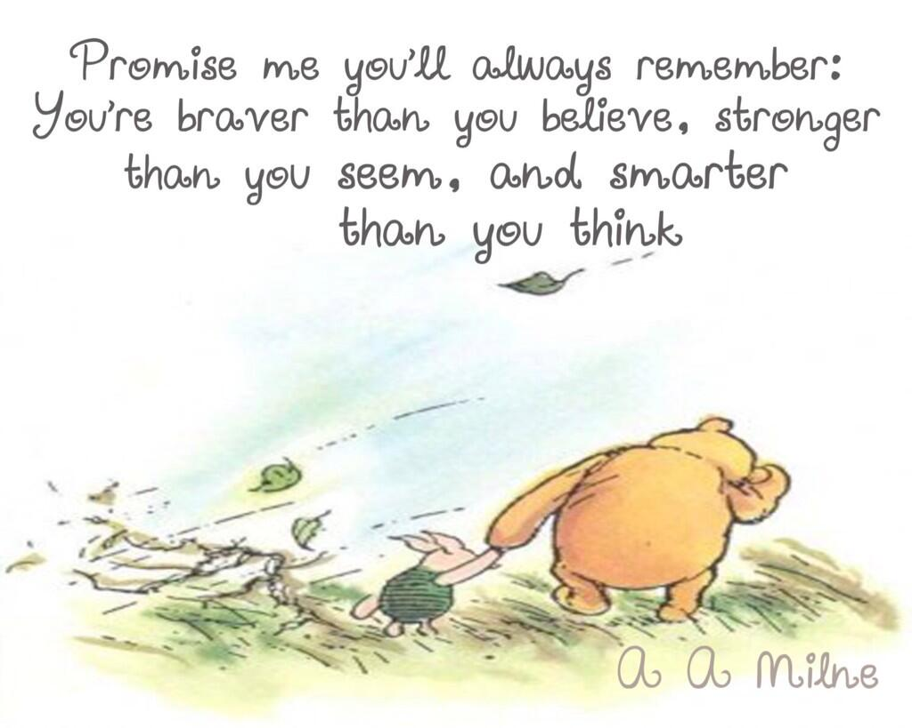
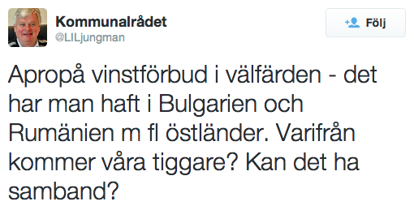
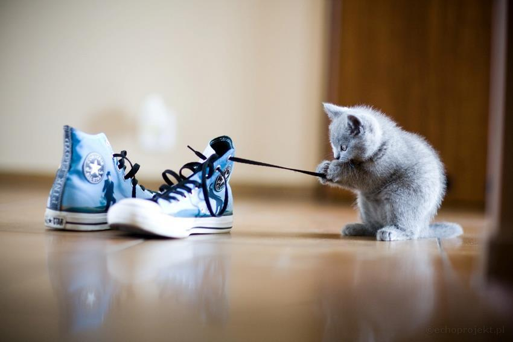
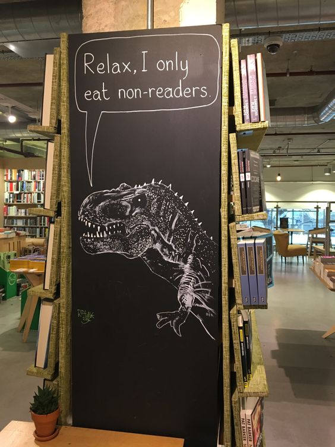
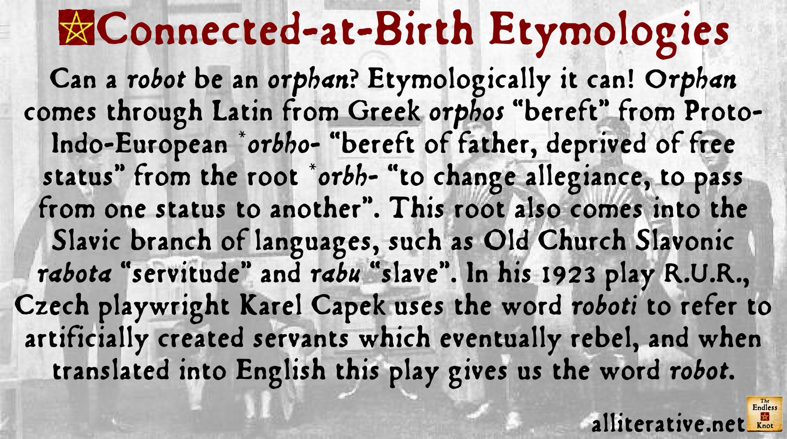

Twitterarkiv för @ihindha
Chris Leonardsson
Anm: Det ända som ändrats är min gamla urlkortare tagits bort och orginal länkar lagts till i görligaste mån. Om jag inte kunnat återskapa länken, är den markerad med Död länk
2012
Augusti
NHW.se - Blogg: Är Apples storhetstid över? Död länk
Vilka städer hade skrån?
Död länk
Låter även som en ganska passande beskrivning av Ihinða... (Äktenskap, barn och sex i Trakonien. http://erik-granstrom.blogspot.se/2012/07/aktenskap-barn-och-sex-i-trakorien.html)
En flodstad med ett par broar på vilka många byggnader på. [gemf. medeltida london]
Såg för ett tag sedan på ett avsnitt av mythbusters där de bevisade att de gamla grekerna mycket väl kan ha skapat en automatiskt armborst.
Hur digitalarkivera? Sätta upp en ny mediawiki? Ammat progarm?
Behöver ett bra namn på min blogg...
Ihinðatankar: Nytt namn: Död länk
Ihinðatankar: Liten språkhistoria ...: Död länk
RT @IDGse: Android stärker greppet om mobilerna http://bit.ly/QOVanj
RT @IDGse: Jättetest: Nexus 7 bryter helt ny mark http://bit.ly/O6FoCN
RT @xdadevelopers: Android: AppSync Moves Apps Between Devices on a Local Network http://bit.ly/MUTQt3
Intressanta översättningstankar ... (Tankar från Trakorien: Traxorien https://erik-granstrom.blogspot.com/2012/08/traxorien.html)
Ihinðatankar (uppdaterat): Plattformsbyte ...
Gräsklippning och sol... En tröttande kombination.
RT @elib_se: Debatt: Sänk momsen på ljud- och e-böcker - nt.se http://nt.se/debatt/default.aspx?articleid=7865537 #ebok #bocker
Då var elden släkt...
Jag gillar The Who...
RT @firefox: Dos and don't for creating a good password: http://mzl.la/R0oiGd
RT @svtnyheter: Facebook misstänks bryta mot lagen http://www.svt.se/nyheter/varlden/facebook-misstanks-bryta-mot-lagen #svt
RT @TechnoBuffalo: Google Voice Search for Android Now Supports 13 Additional Languages http://ow.ly/1m12t5
Sex punkter varför historia är viktigt ... Död länk
September
Skulle alldrig köpa någon kindle produkt, även om jag kunde. En läsprodukt utan epub - nej tack.
Om ölbryggnad på medeltiden Död länk
Man kan ju alltid hoppas ... Död länk
Harrison om Birger Jarl och myntslagning Död länk
RT @DailyDeity: Laka: The Hawaiian goddess of the wildwood, nature, and rainstorms. She was the patroness of the Hula-dancers. (Polynesian)
RT @DailyDeity: Enyalius: A minor Spartan god of war and attendant of Ares. It is also a title of Ares himself. (Greek)
Harrison om Rolandssången. Död länk
RT @DailyCreature: Bwgwl: A spirit in Welsh folklore that inspires terror.
RT @DailyCreature: tovenaar: The Dutch word for magician. (Folklore)
RT @DailyDeity: Inari: The rice or harvest god. Inari is nowadays regarded as the god of prosperity. (Japanese)
RT @adlibris_com: Vi håller med! RT @LinaKalmteg: "E-boken är inget problem! Bara nytt format!" Bra Dorotea Bromberg! #bokmassan
RT @DailyCreature: Divé zeny: 'Wild woman.' A female forest spirit in Bohemian folklore.
Oktober
RT @DailyCreature: Eilean na hÒige: The Scottish Gaelic name for Tír na nÓg. Recently it may also refer to the island of Eriskay.
RT @DailyCreature: Snallygaster: In the South Mountain region (United States), a monstrous bird preying on young children. (Native American)
Harrison om tempelriddarnas undergång. Död länk
November
gReader - Best Google Reader app for Android. http://greader.co
RT @DailyCreature: Rahkoi: The ghost of the Finns and the Saami. It has influence on the phases of the moon. (Finno-Ugric)
TkJ: RetroUI, program som ersätter Metro i Windows 8. Död länk
RT @IDGse: Chrome har knuffat Explorer från tronen http://bit.ly/Tslpw4
December
RT @DailyCreature: ogre: In fairy tales, a man-eating monster, larger than a man yet shorter than a giant. (Folklore)
Testar Falcon Pro
RT @DailyCreature: Gwragedd Annwn: Welsh water-spirits, inhabiting lakes and streams. These lovely creatures often marry mortals and liv ...
RT @KULTURNYHETERNA: First Aid Kit har gjort årets tionde bästa låt (enligt amerikansk tidning): http://www.svt.se/kultur/musik/first-aid-kit-har-gjort-arets-tionde-basta-lat #svt
RT @DailyCreature: Dobharchú: The 'king' of all the lakes and father of all otters, according to Irish folklore.
Viktigt Apple-patent ogiltigförklarats idg.se Död länk
RT @DailyDeity: Gotha: A Lithu-Prussian deity of the propagation of cattle. (Baltic)
2013
Januari
RT @DailyCreature: Äbädä: A forest spirit in Tatar folklore who resembles and old woman. She is generally believed to be harmless. (Turkic)
RT @DailyDeity: Ningyu Lawa: The god of food and of the kitchen. He is one of the sons of Ningsan Woishun and Phungkam Janun. (Burmese)
RT @DailyCreature: ubagabi: According to legend, an old woman once stole oil. The gods punished her by pouring oil on her hair and setti ...
RT @RFSU: Katarina Wennstam: "Genom att uppmana kvinnor att passa sig säger vi att våldtäkt är kvinnors fel. Men det är män måste sluta ...
RT @DailyCreature: Harun: Harun and Haruna are Moroccan water spirits who can assume the form of snakes.
Harrison om ättesamhälle - http://urkort.se/1q
RT @NightsCrusades: You've had your way a long, long time; you kings and tyrants. What ails you that do not tread the path of honour? ~ ...
RT @DailyCreature: Oreande la Fée: A benevolent fairy from fifteenth-century European legend and romance. (Other)
RT @LibrisSverige: "Jag kan aldrig få en kopp te som är för stor eller en bok som är för tjock"
- C.S. Lewis

Februari
RT @DailyDeity: Mompaidu: A god of the atmosphere, of clouds. (Philippine)
RT @DailyCreature: Schachtmandl: In German folklore, the guardian-spirit of the mines. (Germanic)
RT @SvDKultur: "Skelettfyndet kan återupprätta Rikard III:s rykte". Dick Harrison om en av Englands mest omstridda kungar. http://t.co/K ...
Var kan man se digerdödens framfart på gårdarna? | Historiebloggen | SvD - http://urkort.se/1v
Så får du en startknapp i Windows 8 - gratis - http:// http://urkort.se/1w
Tankar från Trakorien: Att gripa till svärd och dö av svärd - http://urkort.se/1x
Var Albrekt en dålig kung? | Historiebloggen | SvD - http://urkort.se/1y
Danagäld | Historiebloggen | SvD - http://urkort.se/1z
Påvarna och Petri nyckelmakt | Historiebloggen | SvD - http://urkort.se/20
Har precis uppdaterat min nexus 7 till ver. 4.2.2 - http://urkort.se/21
RT @DailyCreature: fairy cat: Large supernatural cats in British folklore.
Var vilar Maria Magdalena? | Historiebloggen | SvD - http://urkort.se/24
Mars
Den medeltida borgen på Visingsö | Historiebloggen | SvD - http://urkort.se/26
Latinska riken i det medeltida Grekland | Historiebloggen | SvD - http://urkort.se/27
RT @swedroid: Alla bakgrundsbilder från HTC One och Sense 5 [Notis] http://p.ost.im/p/dHwsFC
Hur splittrat var egentligen Tyskland? | Historiebloggen | SvD - http://urkort.se/28
Växjö biskopsdöme | Historiebloggen | SvD - http://urkort.se/2a
Google vårstädar – lägger ner populära RSS-tjänsten Reader | Swedroid - http://urkort.se/2b
RT @DailyCreature: luideag: A murderous female demon of Scottish Gaelic oral tradition. It haunted several pools on the Isle of Skye.
Ny Dropbox-klient | Feber / Webb - http://urkort.se/2f - Var är linux version?
RT @DailyCreature: Friar Rush: A strolling spirit who once gained admittance into a monastery as a scullion and played various pranks on ...
Ett dalsländskt helgon? | Historiebloggen | SvD - http://urkort.se/2g
Test
Tankar från Trakorien: Veckodagarna - http://urkort.se/2h
April
RT @DailyDeity: Hinokbon: A god who is invoked in cases of wounds, broken bones, dislocations, and snakebite. (Philippine)
RT @DailyCreature: síabair: A large, malicious fairy in Irish folklore. A síabair was said to have tried to choke the pagan Cormac mac Airt…
Landskronas födelsedag | Historiebloggen | SvD - http://urkort.se/2j
Varför ett bondestånd? | Historiebloggen | SvD - http://urkort.se/2k
Kung Krösus | Historiebloggen | SvD - http://urkort.se/2l
Hur lång tid tog det att bygga fästningarna? | Historiebloggen | SvD - http://urkort.se/2m
Tiggarkungen? | Historiebloggen | SvD - http://urkort.se/2n
Hur spreds pesten? | Historiebloggen | SvD - http://urkort.se/2o
Skatteväsendets undergång | Historiebloggen | SvD - http://urkort.se/2p
Maj
RT @DailyCreature: Zitna-atka: A spirit who walks among the cornfields at noon, and kills anyone who cannot answer her riddles. (Slavic)
Trosas ålder | Historiebloggen | SvD - http://urkort.se/2q
Skänninge möte | Historiebloggen | SvD - http://urkort.se/2r
Besegrades romarna av anglosaxarna? | Historiebloggen | SvD - http://urkort.se/2s
Harriet Tubman | Historiebloggen | SvD - http://urkort.se/2t
RT @DailyCreature: Hobande, Lady: A character from French popular belief who visits people's houses by night bringing prosperity.
RT @CarinaBurman: Lockande! Historien sedd gm bl.a. den vackra dalkullan (som f.ö. porträtterades av Fredrika Bremer). http://t.co/oPJEH4Tp…
RT @DailyCreature: Hatif: In Arab superstition, a spirit that is heard but not seen. It may give advice, direction, or warning. (Arabian)
Google integrerar Gmail med Drive | Feber / Webb - http://urkort.se/2u
Irlands guldålder | Historiebloggen | SvD - http://urkort.se/2v
RT @DailyCreature: mermecolion: A legendary hybrid creature found in medieval bestiaries. The mermecolion has the head of a lion and the bo…
RT @aliciadickner: De vi kallar kvinnohatare tror inte heller att män kan vara något bättre. Det är inte feministerna som hatar män, det är…
The Logistics of Minas Tirith | The Dream Forge - http://urkort.se/2w
RT @DailyCreature: Iubdan: The king of the Leprechauns in Irish folklore and legend. He is mentioned in a fifteenth-century manuscript.
Vad är en furste? | Historiebloggen | SvD - http://urkort.se/2x
RT @DailyCreature: Blue-cap: A mine spirit in British folklore prior to the mid-nineteenth century. He assisted miners in their work.
RT @DailyDeity: dGra lha: Deities who are believed to be capable of protecting their worshipers against enemies. (Tibetan)
RT @culturalcat: "When I play with my cat, how do I know that she is not playing with me rather than I with her" -Michel de Montaigne. http…
När den belägrade blir belägrad | Historiebloggen | SvD - http://urkort.se/2y
Sveriges enda stavkyrka | Historiebloggen | SvD - http://urkort.se/2z
Gräsänka och gräsänkling? — Lotten - http://urkort.se/30
The Logistics of Minas Tirith | The Dream Forge - http://urkort.se/2w
Juni
I've just personalized @SwiftKey for Android with my Twitter posts! Get it free at http://www.swiftkey.net
Dela SwiftKey Tablet - SwiftKey Tablet har sparat mig 10,000 tangenttryckningar! Kolla in den här: http://swiftkey.net
Maktkampen i Sverige på 1100-talet | Historiebloggen | SvD - http://urkort.se/31
RT @DailyCreature: Serosevsky: A Russian spirit of the forest who leads travelers astray. It may appear as a human being or as an animal.
Namnet Ladulås | Historiebloggen | SvD - http://urkort.se/32
RT @aliciadickner: "Judge a man not by how he treats his equals but by how he treats his inferiors" - Sirius Black. Hur dömer ni Fredrik Re…
RT @DailyCreature: Alte: 'Old One.' A Teutonic field-spirit who appears in human form.
RT @DailyDeity: Aathaney: A nature deity of the Rai (Khambu) of Nepal, invoked for good cultivation and harvest, rain, and better health an…
RT @Biblioteksblade: Öppet brev om e-böcker http://biblioteksbladet.se/2013/06/20/oppet-brev-om-e-bocker/
Ten years of supporting free knowledge — Wikimedia blog - http://urkort.se/36
Läsp och halt? | Historiebloggen | SvD - http://urkort.se/37
En av många bortglömda drottningar | Historiebloggen | SvD - http://urkort.se/38
En hjältedikt | Historiebloggen | SvD - http://urkort.se/39
Kvinnliga kejsare i Kina? | Historiebloggen | SvD - http://urkort.se/3a
Juli
RT @NightsCrusades: To each brother we grant one squire, and if he serves charity, the brother should not beat him for any sin ~ Rules of t…
RT @NightsCrusades: Do not come against me, do not live by my magic; may I not have to tell this name of yours to the Great God who sent yo…
Hur länge har germaner bott i Sverige? | Historiebloggen | SvD - http://urkort.se/3b
Kungaborg eller biskopsborg? | Historiebloggen | SvD - http://urkort.se/3c
Källkritiken och sagokungarna | Historiebloggen | SvD - http://urkort.se/3d
RT @UberFacts: Hohenzollern Castle, Germany

RT @NightsCrusades: The felled knight smote all who passed. A blow wounded Jum'ah's forehead, leaving it open like the mouth of a fish ~ Ib…
RT @aliciadickner: Jag vill inte SE apoteket göra reklam för hårvårdsprodukter I TV. Jag vill se apoteket GARANTERA ATT ALLA FÅR DEN MEDICI…
Källkritiken och sagokungarna | Historiebloggen | SvD - http://urkort.se/3d
I just signed up for @CopyApp and got 15 GB free online storage! #tweetFor2GBMore
http://copy.com/?s=twitter.usr.tour
Sign up for @copyapp with this link, and we'll both get 5 GB of free cloud storage in addition to the usual 15 GB: https://copy.com?r=WVVERr
Varför ligger Ängelholm inte vid havet? | Historiebloggen | SvD - http://urkort.se/3j
Google Play Böcker kommer till Sverige – vi har fått en bokbutik | Swedroid | Nordens största Android-community - http://urkort.se/3k
Vem var drottning Filippa? | Historiebloggen | SvD - http://urkort.se/3l
RT @Creutz: Torget i #Borås från ovan, år 1932.

Media Storage: Copy Vs. Google Drive - LockerGnome - http://urkort.se/3m
Nu finns Google Play Böcker i Sverige - Allt om Android - http://urkort.se/3n
Falcon Pro v2.0.5 update brings offline improvements - Android Community - http://urkort.se/3o
SwiftKey Cloud beta launched with sync, backup and trending phrases | Android Central - http://urkort.se/3q
RT @SwiftKey: Try the new SwiftKey Cloud features in our latest beta - download free now: http://beta.swiftkey.net
New Nexus 7 specs | Android Central - http://urkort.se/3t
Nyheterna i Android 4.3 – börjar skickas ut till Nexus-enheter redan idag | Swedroid - http://urkort.se/3u
En miljon appar och 50 miljarder nedladdningar i Play Store [Statistik] | Swedroid - http://urkort.se/3v
Nexus 7 - Googles nya mini-messias - IDG.se - http://urkort.se/3w
Därför la man ner Google Reader: Internpolitik | TkJ.se- http://urkort.se/3x
”Jag har upptäckt fördelarna med att läsa e-böcker” | Svensk Bokhandel - http://urkort.se/3y
Kungar i Wales | Historiebloggen | SvD - http://urkort.se/3z
Tankar från Trakorien: Tjuv! - http://urkort.se/40
The Stone Age: the Neolithic Period | History in an HourHistory in an Hour - http://urkort.se/42
RT @LoveMeowdotcom: 18 months later and kitty still sleeps with his duck toy: http://po.st/pgLQfs

Augusti
Ett korståg från Sunnmöre | Historiebloggen | SvD - http://urkort.se/44
RT @NightsCrusades: Not a day passed without death. Both sides grew tired. They would sing together at times, but then they would revert to…
RT @ankiahlin: En smula hänsyn och lite omtanke betyder så mycket.
Nalle Puh.
Sagan om sagorna: Medan jag är upptagen på annat håll... - http://urkort.se/45 - Underbart...
RT @ankiahlin: Människor som inte tänker ordentligt har inga hjärnor, snarare har de grått ludd som flugit in i huvudet på dem av misstag.
…
Apple pressas efter domstolsförlust | Svensk Bokhandel - http://urkort.se/46
RT @fabsh: Fox News

Nova Launcher update brings new custom docks, scroll effects and more - Android Community - http://urkort.se/47
Ljus på medeltiden | Historiebloggen | SvD - http://urkort.se/48
OS X apps run on Linux with Wine-like emulator for Mac software | Ars Technica - http://urkort.se/49
New Nexus 7 Factory Images Not Available; JBQ Leaves AOSP - xde- developers | http://urkort.se/4a
One World to Rule Them All: The Six Pillars of Middle Earth (Part 1 of 2) | http://Tor.com - http://urkort.se/4c
RT @NightsCrusades: None have escaped the Old Man of the Sea but thou, and those who die under him he eateth. So praise Allah for thy safet…
Fostre och fostra | Historiebloggen | SvD - http://urkort.se/4d
RT @sinoes: Tycker vi ska sluta snacka om valfrihet och börja snacka om valtvång.
SwiftKey Cloud Beta Update - http://urkort.se/4e
Bryten, då? | Historiebloggen | SvD - http://urkort.se/4f
RT @HourlyCats: HourlyCats presents:

RT @ankiahlin: Fastän det är förfärligt gott att äta honung, så finns det ett ögonblick alldeles innan man börjar äta den, som är nästan än…
September
Peterspenningen | Historiebloggen | SvD - http://urkort.se/4h
RT @elib_se: Endast Eböcker ...: Moms på eböcker http://endastebocker.blogspot.com/2013/09/moms-pa-ebocker.html?spref=tw #ebok
Test
Oktober
Hjo | Historiebloggen | SvD - http://urkort.se/4k
RT @HourlyCats: HourlyCats presents:

RT @HourlyCats: HourlyCats presents:

Skuggornas bibliotek: Trailerfredag - http://urkort.se/4l
Those new Kindle tablets would be awesome if they ran stock Android | Pocketnow - http://urkort.se/4m
Tankar från Trakorien: Sisyfos tempel - http://urkort.se/4n
Bandstationernas konung - IDG.se - http://urkort.se/4o
Har Skåne tillhört Tyskland? | Historiebloggen | SvD - http://urkort.se/4p
E-Book Watermarking Gains Traction in Europe | Copyright and Technology - http://urkort.se/4q
Gästinlägg Mårten Sandén: Öppet brev till män som inte läser « Bokhora - http://urkort.se/4r
Endast Eböcker ...: Amazon och ebokhandlare i Sverige - http://urkort.se/4s
RT @HourlyCats: HourlyCats presents:

Jobbar Apple med en Ipad Pro? - Mobil.se - http://urkort.se/4u
Aviate Launcher promises simplicity and intelligence, currently sits in private beta - Android Community - http://urkort.se/4v
Google Play Books Updated With Better Support For Scanned Books - The Digital Reader - http://urkort.se/4w
December
Från Östra Aros till Uppsala (via @Pocket) http://urkort.se/4x
2014
Januari
Vad är en stridshingst? | Historiebloggen | SvD - http://urkort.se/50
Orcherna | Historiebloggen | SvD - http://urkort.se/51
Talon for Twitter brings beautiful, functional Twitter Android app - http://urkort.se/52
RT @giselaj: Ung kvinna bli vräkt eftersom hon "stört grannarna" när hon skrek på hjälp under misshandel. http://vlt.se/nyheter/vasteras/1.2347980-grannarna-klagade-pa-hennes-rop-pa-hjalp-nu-ska-hon-vrakas
RT @HistoryNeedsYou: Promise me...
The wisdom of Winnie-the-Pooh by #AAMilne

RT @socialdemokrat: På bara 8 år har regeringen förvandlat ett överskott på 65 mdr till ett underskott på 87 mdr. #svtagenda #svpol http://…
RT @aliciadickner: #feminismförmig är att ge kvinnor MÖJLIGHETEN att vara fula, tjocka och orakade utan att någon ska få dem att må dåligt …
RT @ankiahlin:
Tips för tangentbordet SwiftKey - Swedroid - http://urkort.se/5i
Prova SwiftKey! - SwiftKey har sparat mig 10 000 tangenttryckningar! Kolla in den här: http://swiftkey.net
Adobe Hardens DRM Protection, Likely to Send More People to Amazon to Buy eBooks | The eBook Reader Blog - http://urkort.se/5l
Adobe Releases New Epub DRM - The Digital Reader - http://urkort.se/5m
RT @swedroid: Nexus-serien kommer ersättas av Play Store-enheter enligt rykte http://p.ost.im/RvTebJ
Februari
Any.do Cal: Minimalistisk agenda | Mobil - http://urkort.se/5q
Var de ”mörka tidsåldrarna” verkligen så mörka? | Historiebloggen | SvD - http://urkort.se/5s
Nytt lagförslag: Gör det lättare att byta operatör | Mobil - http://urkort.se/5t
RT @feber: Apple hyllar Apple http://ow.ly/te5Sv #Apple
RT @NightsCrusades: His valour was admired by his enemies; they were filled with compassion for him, and called earnestly to him to surrend…
RT @ankiahlin: Kramar är det bästa som vi kan ge varandra♥
RT @alliansfritt: Högerns argument för att låta utländska bolag plundra välfärden blir allt sämre.

RT @androidcentral: Nexus 5 launcher now 'Google Now Launcher' after Search update http://phon.es/3lca #android
RT @stefan_palsson: Megafoner.se: E-boken hos Elib – nu ställs mycket på ända http://bit.ly/1jiAiSY #bibliotek #ebok
Februari
Any.do Cal: Minimalistisk agenda | Mobil - http://urkort.se/5q
Var de ”mörka tidsåldrarna” verkligen så mörka? | Historiebloggen | SvD - http://urkort.se/5s
Nytt lagförslag: Gör det lättare att byta operatör | Mobil - http://urkort.se/5t
RT @feber: Apple hyllar Apple http://ow.ly/te5Sv #Apple
RT @NightsCrusades: His valour was admired by his enemies; they were filled with compassion for him, and called earnestly to him to surrend…
RT @ankiahlin: Kramar är det bästa som vi kan ge varandra♥
RT @alliansfritt: Högerns argument för att låta utländska bolag plundra välfärden blir allt sämre.
RT @androidcentral: Nexus 5 launcher now 'Google Now Launcher' after Search update http://phon.es/3lca #android
RT @stefan_palsson: Megafoner.se: E-boken hos Elib – nu ställs mycket på ända http://bit.ly/1jiAiSY #bibliotek #ebok
Mars
I love Dropbox because of it's simplicity. https://db.tt/CMYacKiW
Kristnade Ansgar Sverige? | Historiebloggen | SvD - http://urkort.se/65
Chris Lacy släpper Link Bubble, tar sig an länkar på ett unikt sätt - Swedroid - http://urkort.se/66
Google updates Gmail, offers “encrypted HTTPS connection” - Android Community - http://urkort.se/67
Hwæt! Tolkien’s Beowulf Coming in May | http://Tor.com - http://urkort.se/68
literature connoisseur: Betraktelse 22: Om forn sed - http://urkort.se/69
literature connoisseur: Betraktelse 21: Om runor - http://urkort.se/6a
Kunde Finland ha blivit danskt? | Historiebloggen | SvD - http://urkort.se/6b
Bronstjuren i Akragas | Historiebloggen | SvD - http://urkort.se/6c
Google's Voice Command for Playing Music http://urkort.se/6h
Getting Started with Google Play Music on Ubuntu | OMG! Ubuntu! - http://urkort.se/6i
Kolchis | Historiebloggen | SvD - http://urkort.se/6j
Så är Googles nya musiktjänst | Mobil - http://urkort.se/6k
Google Play Services 4.3 update begins rolling out globally - http://urkort.se/6l
Google updates the Play Store to 4.6, fixing a lot of Annoyances | http://RootzWiki.com - http://urkort.se/6m
Vem var Sankt Ibb? | Historiebloggen | SvD - http://urkort.se/6n
Google utmanar Spotify Sverige - dn.se http://urkort.se/6o
Podcast on the big screen - Pocket Casts gets Chromecast support | Android Authority - http://urkort.se/6p
RT @HourlyCats: HourlyCats presents:

RT @HourlyCats: HourlyCats presents:
How to transfer bookmarks from iPhone to Android - Android Authority
- http://urkort.se/6r
So true! http://urkort.se/6t
Testar ShereBoard
Spotify shifting focus to web and mobile, ends desktop Apps program - http://urkort.se/6x
Google Now on Chrome finally comes to Windows and Mac OS | Ars Technica - http://urkort.se/6y
Microsoft releases source code for MS-DOS and Word | Ars Technica - http://urkort.se/6z
Svensk moms på digitala varor från 2015 - IT-Politik - http://SweClockers.com - http://urkort.se/70
Google Play Music adds the ability to upload songs from your browser - http://urkort.se/71
Play Music platform now allows upload in Chrome browser, popout mini player | http://RootzWiki.com - http://urkort.se/72
Apple releasing iTunes on Android is a brilliant move | Pocketnow - http://urkort.se/73
BlackBerry wins sales injunction against Typo's familiar-looking keyboard case - http://urkort.se/74
April
Humble Bundle PC and Android 9: Pay what you want for 6 games playable on your Android device and PC! https://www.humblebundle.com via @humble
Four Alternatives to Ubuntu One | OMG! Ubuntu! - http://urkort.se/75
Gör Google Play Musik bättre genom att aktivera Labb-finesser - Swedroid - http://urkort.se/7g
Ubuntu 14.04 LTS: The Good, the Bad and the Awesome | OMG! Ubuntu! - http://urkort.se/7h
Vad skall man kalla goterna? | Historiebloggen | SvD - http://urkort.se/7i
Herostratos och Artemistemplet | Historiebloggen | SvD - http://urkort.se/7j
Sign up for @copy with this link, and we'll both get 5 GB of free cloud storage in addition to the usual 15 GB: https://copy.com?r=WVVERr
Install Clementine Music Player 1.2.3 in Ubuntu 14.04 | UbuntuHandbook - http://urkort.se/7m
Android eBook App Aldiko Hits 20 Million Downloads - The Digital Reader - http://urkort.se/7n
Link Bubble updated with stability fixes, new translations and Pro feature trial | Android Central - http://urkort.se/7o
Kinas första dynasti? | Historiebloggen | SvD - http://urkort.se/7p
Ubuntu 14.10 Is Code Named Utopic Unicorn - http://urkort.se/7q
IFTTT Now Available in the Google Play Store | http://RootzWiki.com - http://urkort.se/7r
Maj
Nyttoprogrammet IFTTT släpps för Android - Swedroid - http://urkort.se/7u
Aegidius rike | Historiebloggen | SvD - http://urkort.se/7w
How to use IFTTT to automate your Android - AndroidPIT - http://urkort.se/7x
How To Drag And Drop Files In Ubuntu 14.04 Unity [Quick Tip] - http://urkort.se/7y
Nya Play – så jobbade vi - Utvecklingsbloggen | Sveriges Radio - http://urkort.se/80
Sexuellt våld i fantasy och ursäkterna som används för att försvara det | In Another Library - http://urkort.se/81
Google forces Drive users to adopt new editing apps: upgrade or downgrade? | Pocketnow - http://urkort.se/82
The Google v. Oracle appeal ruling: why it’s important - Android Community - http://urkort.se/83
Google Maps får bättre offlinestöd och mycket annat smått och gott - Swedroid - http://urkort.se/84
Google Stars leak reveals a new way to share and search your bookmarks - http://urkort.se/85
Vapen på barbarernas tid | Historiebloggen | SvD - http://urkort.se/86
Så här fungerar offlinestödet i Google Maps 8.0 - Swedroid - http://urkort.se/87
Kindle for Android: How to Sideload eBooks and PDFs Tutorial (Video) | The eBook Reader Blog - http://urkort.se/88
När dog frankiskan ut? | Historiebloggen | SvD - http://urkort.se/89
Nexus 6 and 8 mentioned in Chromium code - Android Community - http://urkort.se/8b
Gmail för Android passerar en miljard nedladdningar - Swedroid - http://urkort.se/8c
Friskoleägare varnar för V | Flamman - http://urkort.se/8d
George R. R. Martin och hans DOS-dator med WordStar 4.0 | TkJ.se - http://urkort.se/8e
Fimbulvintern år 536 e.Kr. | Historiebloggen | SvD - http://urkort.se/8g
Sten Sture den äldres maskerade död | Historiebloggen | SvD - http://urkort.se/8h
eBook Architects's Epub Validation Tool Launches into Open Beta - The Digital Reader - http://urkort.se/8i
RT @patrikstromer: 75 år sen WWII och 25 år sedan Berlinmurens fall.
Typ hälften av Europa (inkl Sverige) tycks ha lyckats glömma.
#dinröst…
Karl Knutssons fall år 1457 | Historiebloggen | SvD - http://urkort.se/8j
Upplyst despotism | Historiebloggen | SvD - http://urkort.se/8k
Any.do task manager for the web is here, launches today | Android Central - http://urkort.se/8l
FeedBooks Acquires Aldiko, Plans to Launch Aldiko App on iOS - The Digital Reader - http://urkort.se/8m
Augusti
Varför ”Henrik av Navarra”? | Historiebloggen | SvD - http://urkort.se/8r
RT @torbooks: What book did you put off starting in order to put off the ending? http://bit.ly/1nE0hlF
September
RT @socialdemokrat: Så här bekämpar man inte arbetslösheten. Vid valvinst kommer vi avskaffa Fas 3 #svpol #val2014 #dinröst http://t.co/Hse…
November
p>9 tips för att söka och hitta bättre på nätet! | TkJ.se - http://urkort.se/95
Testar
Cairo Dock 3.4 has been released, Install in Ubuntu/Linux Mint - Ubuntu/Linux News, Reviews, Tutorials, Apps - http://urkort.se/97
Varför expanderade Östrom i Spanien? | Historiebloggen | SvD - http://urkort.se/98
Shadow of the Dragon, by Leo Black | Sartorially Smart Heroines - http://urkort.se/99
Torshem | Karkionen i Kandra - http://urkort.se/9a
Krigsbyten eller stöldgods? | Historiebloggen | SvD - http://urkort.se/9b
Skulle du passa som medeltida författare? | Kvinnliga krigare - http://urkort.se/9c
Apple slår mot Spotify, skickar ut Beats Music via iOS-uppdatering? | TkJ.se - http://urkort.se/9d
December
p>9 tips för att söka och hitta bättre på nätet! | TkJ.se - http://urkort.se/95
Testar
Cairo Dock 3.4 has been released, Install in Ubuntu/Linux Mint - Ubuntu/Linux News, Reviews, Tutorials, Apps - http://urkort.se/97
Varför expanderade Östrom i Spanien? | Historiebloggen | SvD - http://urkort.se/98
Shadow of the Dragon, by Leo Black | Sartorially Smart Heroines - http://urkort.se/99
Torshem | Karkionen i Kandra - http://urkort.se/9a
Krigsbyten eller stöldgods? | Historiebloggen | SvD - http://urkort.se/9b
Skulle du passa som medeltida författare? | Kvinnliga krigare - http://urkort.se/9c
Apple slår mot Spotify, skickar ut Beats Music via iOS-uppdatering? | TkJ.se - http://urkort.se/9d
2015
April
Microsoft loses exclusivity in shaken up Yahoo search deal | Ars Technica - http://urkort.se/9h
När fick Sverige ett andligt frälse? | Historiebloggen | SvD - http://urkort.se/9i
Har Facebook dödat webbforumen? | .SE - http://urkort.se/9j
Kvinnor blir män i medeltida romaner | Kvinnliga krigare - http://urkort.se/9k
Ord och inga visor från Adlibris vd | Daniel Åberg – Författande, bokbransch, teknik och småbarnsliv - http://urkort.se/9l
discordia » Konsten att aldrig hålla käften - http://urkort.se/9m
Kung Oluf av Skåne | Historiebloggen | SvD - http://urkort.se/9n
Militarisering av det medeltida kulturlandskapet? | Historiebloggen | SvD - http://urkort.se/9o
Medeltida förklaring att kvinnor bryter normer | Kvinnliga krigare - http://urkort.se/9p
Att bli fredlös | Historiebloggen | SvD - http://urkort.se/9q
Maj
Hur uppstod klosterväsendet? | Historiebloggen | SvD - http://urkort.se/9s
Kung, drottning och prins | Historiebloggen | SvD - http://urkort.se/9t
Myter att avliva: rätten till första natten | Kvinnliga krigare - http://urkort.se/9u
Test: Adlibris Letto Frontlight | Daniel Åberg – Författande, bokbransch, teknik och småbarnsliv - http://urkort.se/9v
Tribal Hidage | Historiebloggen | SvD - http://urkort.se/9w
Juni
Allt svårare för svenska nätbokhandlare att hävda sig gällande e-böcker | Daniel Åberg - http://urkort.se/9x
Påvemaktens ursprung | Historiebloggen | SvD - http://urkort.se/9y
From the Editor's Desk: In love with Google Photos | Android Central - http://urkort.se/9z
30 LG G4 Tips & Tricks - http://urkort.se/a1
Gmail Update Adds Support For Oauth On Yahoo And Microsoft Email Accounts [AndroidPolice] - http://urkort.se/a2
Jag har gjort mitt val för en sänkt moms på digitala böcker! Gör det du med på: http://forlaggare.se/bokvalet #bokvalet
Kulturpersonligheter i upprop mot hög moms på digitala böcker - Kulturnytt | Sveriges Radio - http://urkort.se/a3
French privacy watchdog orders Google to expand 'right to be forgotten' globally | Android Central - http://urkort.se/a4
Try Nuvola Player 3 Beta (Cloud Music Player With Tight Desktop Integration) ~ Web Upd8: Ubuntu / Linux blog - http://urkort.se/a6
Google Play Books Reaches a Billion Installs - Are Your eBooks Available There? | Ink, Bits, & Pixels - http://urkort.se/a7
Test
RT @ValaAfshar: A brilliant illustration of how much public space we've surrendered to cars
Uppdatering av mjukvaran ska sänka värmeutvecklingen i Sony Xperia Z3+ - Swedroid - http://urkort.se/a9
Ddos-attacker mot Loopia slog ut svenska sajter - IDG.se - http://urkort.se/aa
Fortsatt fokus på digital moms | Svensk Bokhandel - http://urkort.se/ab
Google updates Maps, Camera apps for Android - Android Community - http://urkort.se/ac
Vi testar LG G4 - Swedroid - http://urkort.se/af
Google on Apple: The end is near | Computerworld - http://urkort.se/ag
Telenor: Svenskar mobilsurfar mest på kvällen - Swedroid - http://urkort.se/ah
Google Photos isn't as private as we thought - http://urkort.se/ai
Författare och företag mot momsen för e-böcker | TkJ.se - http://urkort.se/aj
Juli
It’s like looking at a book (cartoon) - http://urkort.se/ak
Oktober
Vilka var kungens kvinnliga trubadurer? | Kvinnliga krigare - http://urkort.se/al
December
Even more to love about Chromecast Audio - Google Chrome Blog http://urkort.se/ar
17. Läget för e-boken vintern 2015 | Daniel Åberg – Författande, bokbransch, teknik och småbarnsliv - http://urkort.se/as
Januari
main class="container">Loopia FAQ | SupportWiki - http://urkort.se/at
Jag gillade ett videoklipp på @YouTube från @quidsup http://youtu.be/WI160crtm7Q?a Introducing NoTrack v0.3 Alpha
Februari
Jag gillade ett videoklipp på @YouTube från @lucahjin http://youtu.be/5lycHOCvRj8?a Pony Island! :D Part 2 - Debugging a Demon!
Jag gillade ett videoklipp på @YouTube från @twildottv http://youtu.be/63an0eRnGQ0?a Managing your YouTube Subscriptions with RSS!
Juni
Jag gillade ett videoklipp på @YouTube från @extracreditz http://youtu.be/HyjLt_RGEww?a The History of Writing - Where the Story Begins -
4 of 5 stars to Claiming Excalibur by L.H. Nicole https://goodreads.com/review/show/1660380373
Jag gillade ett videoklipp på @YouTube från @gaijingoomba http://youtu.be/lkggHFB5Hiw?a Real Star Wars Jedi EXIST! - Reel Culture (Pilot)
Juli
RT @historiskamuse: När kollegorna droppar av efter lunch och önskar "trevlig semester". Flera veckor innan det är dags för en själv. https…
RT @goodreads: World's cutest bookmark? http://bit.ly/29r3Sa1
Jag gillade ett videoklipp på @YouTube från @lucahjin http://youtu.be/BfhSC6_jnIQ?a Panzermadels - ♥ GIRL BUILT LIKE A TANK! ♥
Jag gillade ett videoklipp på @YouTube från @linustech http://youtu.be/GTPO9lQIWK4?a Mystery Unboxing from Intel???
Augusti
Jag gillade ett videoklipp på @YouTube från @technobuffalo http://youtu.be/v-Q9a-9BqAk?a New MacBook Pro: OLED, AMD, & New Design!
September
Jag gillade ett videoklipp på @YouTube från @technobuffalo http://youtu.be/BLjUVBL-57I?a Nexus One Revisited: The Beginning of a Legacy
Vecka 35 | Från mina flöden | http://uk.chle.se/2csAlyT
RT @letsencrypt: We’ve now issued more than 10 million certificates.
Has Huawei built a tablet for Google to be released in 2016? | Android Authority | http://uk.chle.se/2c1GHFh
Huawei-made Google tablet with 7-inch display slated to debut later this year | Android Central | http://uk.chle.se/2c1GbaE
Telia döms till att lämna ut uppgifter om Black Sails-pirater |http://SweClockers.com | http://uk.chle.se/2c1HuGj
Huawei said to be building new Nexus 7 to launch this year | http://TechnoBuffalo.com | http://uk.chle.se/2c1HIx9
Jag gillade ett videoklipp på @YouTube från @gaijingoomba http://youtu.be/_RVao5tJ4Qk?a I Need Your Help To Get My Instagram Back! -
Jag gillade ett videoklipp på @YouTube från @saigancat http://youtu.be/eeKOyTmMtdY?a Hour 4 - Let's Play Dragon Quest VII Fragments of the
Jag gillade ett videoklipp på @YouTube från @gamingwildlife http://youtu.be/e67OCOMaXXA?a If Apple Were 100% Honest With Us...(2016
Oktober
Jag gillade ett videoklipp på @YouTube från @alliterative http://youtu.be/dU965S2lEMY?a Ambition: Word History Connections
Jag gillade ett videoklipp på @YouTube från @olizandrionyt http://youtu.be/CDuJStMrtEc?a Paper Mario: Color Splash - Drained Disaster,
Jag gillade ett videoklipp på @YouTube http://youtu.be/Cd-Htc_EeBs?a The British Accent Doesn't Exist...Nor the American Accent
November
4 of 5 stars to Pro Git by Scott Chacon https://www.goodreads.com/review/show?id=1498427364
Jag gillade ett videoklipp på @YouTube från @alliterative http://youtu.be/uAelIs0pNUY?a Etymology: Word History Connections
December
Jag gillade ett videoklipp på @YouTube från @spawnwavemedia http://youtu.be/pWr5nJiK1XI?a News Wave! - Dragon Quest XI, Nintendo Switch
Jag gillade ett videoklipp på @YouTube från @techmoan http://youtu.be/1F7-JpVv3N8?a Techmoan's Christmas Special 2016
2017
Januari
40% done with Fantastic Beasts and Where to Find Them, by J.K. Rowling https://goodreads.com/user_status/show/116766510
On page 85 of 267 of Mordet i Eiffeltornet, by Claude Izner https://goodreads.com/user_status/show/116786753
41% done with Hotel Valhalla Guide to the Norse Worlds, by Rick Riordan https://goodreads.com/user_status/show/116804295
On page 118 of 267 of Mordet i Eiffeltornet, by Claude Izner https://goodreads.com/user_status/show/116824268
11% done with Percy Jackson and the Greek Heroes, by Rick Riordan https://goodreads.com/user_status/show/116969511
On page 149 of 267 of Mordet i Eiffeltornet, by Claude Izner https://goodreads.com/user_status/show/116977545
On page 165 of 267 of Mordet i Eiffeltornet, by Claude Izner https://goodreads.com/user_status/show/117117331
Marked as boktips: The Blood of Olympus by Rick Riordan https://www.goodreads.com/review/show/1461964182
25% done with Percy Jackson and the Greek Heroes, by Rick Riordan https://goodreads.com/user_status/show/117527285
60% done with Percy Jackson and the Greek Heroes, by Rick Riordan https://goodreads.com/user_status/show/118372934
83% done with Percy Jackson and the Greek Heroes, by Rick Riordan https://goodreads.com/user_status/show/118628554
Sagans könsöverskridande sköldmö – Kvinnliga krigare http://uk.chle.se/2iDc8Yg
Public Domain Project Calls on EU to Abandon Piracy Filter Proposals - TorrentFreak http://uk.chle.se/2iFj8nw
Varför begravdes vissa vikingatida kvinnor med vapen? - Kvinnliga krigare - http://uk.chle.se/2iAhRea
85% done with Percy Jackson and the Greek Heroes, by Rick Riordan https://goodreads.com/user_status/show/118939287
Microsoft to Sell eBooks? - The Digital Reader - http://uk.chle.se/2joHG2M
49 Libraries Loan Out Over 1 Million eBooks in 2016 - GoodReader http://uk.chle.se/2jpslyY
DoD Retro – första intrycket | Karkionen i Kandra http://uk.chle.se/2jsK88s
Bra motion eller en fara för hemmet? Medeltida diskussion om kvinnliga krigare – Kvinnliga krigare http://uk.chle.se/2jsFCa6
Are Tablets and Phones More Popular for Reading Than eBook Readers? | The eBook Reader Blog http://uk.chle.se/2jsOSuU
Politiska skäl bakom Bernadottes försiktighet vid slaget | SvD http://uk.chle.se/2j1kJ7u
Jag gillade en video på @YouTube från @quill18 http://youtu.be/hBLSfQ88TR0?a Let's Play: Urban Empire - A Multi-Era City Ruler! - Part 10
Marked as to-read: En Dufva i Stockholm by Olov Svedelid https://www.goodreads.com/review/show?id=1887361594
2% done with One Horn to Rule Them All, by Lisa Mangum https://goodreads.com/user_status/show/119504402
21% done with Freja, by Johanne Hildebrandt https://goodreads.com/user_status/show/119899062
29% done with Freja, by Johanne Hildebrandt https://goodreads.com/user_status/show/120127774
Marked as det-jag-skall-läsa-härnäst: Spöket på Canterville by Oscar Wilde https://www.goodreads.com/review/show?id=1894618885
3 of 5 stars to Eragon by Christopher Paolini https://goodreads.com/review/show/1895526714
4 of 5 stars to Alice's Adventures in Wonderland by Lewis Carroll https://goodreads.com/review/show/829015017
33% done with Freja, by Johanne Hildebrandt https://goodreads.com/user_status/show/120332988
Endast Eböcker ...: Sänkt moms på eböcker om ett år? http://uk.chle.se/2jix9tf
Adlibris fortsätter satsning på Letto - sålde 10 000 läsplattor 2016 - Boktugg.se http://uk.chle.se/2kEqbPE
Hur många ljudboksabonnemang har vi råd med? | Daniel Åberg http://uk.chle.se/2jVxyih
6% done with Ordets makt och vanmakt - mitt skrivande liv, by Jan Guillou https://goodreads.com/user_status/show/120385483
4 of 5 stars to Tyvenes Marked by Jan Guillou https://goodreads.com/review/show/1462279143
4 of 5 stars to En annan tid, ett annat liv (Världfär... by Leif G.W. Persson https://goodreads.com/review/show/1461944360
3 of 5 stars to Hotel Valhalla Guide to the Norse Worlds by Rick Riordan https://goodreads.com/review/show/1859618232
Amazon säljer läsplatta med eboks-abonnemang - Boktugg.se http://uk.chle.se/2joe49e
Så fungerar Dropbox nya app Paper | Mobil http://uk.chle.se/2jr7Fdm
Kindle for PC gains text-to-speech (but makes stripping DRM harder) - Liliputing http://uk.chle.se/2kd54Ri
Kampen mellan Brynhild och Fredegund (del ett) | Kvinnliga krigare http://uk.chle.se/2kdsPbV
Februari
37% done with Freja, by Johanne Hildebrandt https://goodreads.com/user_status/show/120590639
11% done with Ordets makt och vanmakt - mitt skrivande liv, by Jan Guillou https://goodreads.com/user_status/show/120871935
Tonåringar vill läsa online | Svensk Bokhandel http://uk.chle.se/2koJWYC
Bryter ljudbokskontrakt | Svensk Bokhandel http://uk.chle.se/2koJs4w
Så kommer momsen att påverka | Svensk Bokhandel http://uk.chle.se/2kpTAdu
Jag gillade en video på @YouTube från @olizandrionyt http://youtu.be/4rG6gJDIHh0?a It's Here, The New Look Olizandri Channel!
Jag gillade en video på @YouTube http://youtu.be/Tct38KwROdw?a Giving birth costs a lot. Hospitals won't tell you how much.
5 of 5 stars to Arrows of the Queen by Mercedes Lackey https://www.goodreads.com/review/show?id=1450656452
28% done with Blodskifte, by Eva Holmquist https://goodreads.com/user_status/show/123146731
40% done with Blodskifte, by Eva Holmquist https://goodreads.com/user_status/show/123223373
73% done with Blodskifte, by Eva Holmquist https://goodreads.com/user_status/show/123254543
16% done with The Bard's Daughter, by Sarah Woodbury https://goodreads.com/user_status/show/123537701
36% done with The Bard's Daughter, by Sarah Woodbury https://goodreads.com/user_status/show/123545523
64% done with The Bard's Daughter, by Sarah Woodbury https://goodreads.com/user_status/show/123551542
20% done with The Good Knight, by Sarah Woodbury https://goodreads.com/user_status/show/123609535
35% done with The Good Knight, by Sarah Woodbury https://goodreads.com/user_status/show/123662428
40% done with The Good Knight, by Sarah Woodbury https://goodreads.com/user_status/show/123724781
Mars
56% done with The Good Knight, by Sarah Woodbury https://goodreads.com/user_status/show/123915275
3 of 5 stars to Ordets makt och vanmakt - mitt skriva... by Jan Guillou https://www.goodreads.com/review/show?id=829012811
I'm #reading A Brief History of Walt Disney by Brian J. Robb https://www.goodreads.com/review/show?id=1935449681
RT @bladetledare: Arbetare sparkas - ledningen belönas http://j.mp/2nG9GRu #svpol
Nova Launcher beta update adds dynamic notification badges - Android Authority - http://uk.chle.se/2n3S5SJ
Google har tröttnat på Symantecs slarv – blockerar 30 000 certifikat - TechWorld - http://uk.chle.se/2n3VcKj
Regeringen inleder arbete med avgiftsfri släktforskning - Peter Alsbjers blogg - http://uk.chle.se/2n440Qz
Storytel svarar med fyra nya marknader och 1,5 miljarder mobilkunder - Bokktugg -
http://uk.chle.se/2n3MM5x
Ja till mjuka böcker - Daniel Åberg -
http://uk.chle.se/2n3YiOl
Säger upp översättaravtal | Svensk Bokhandel | http://uk.chle.se/2ndj6TQ
April
Jag gillade en video på @YouTube http://youtu.be/QupWTVD1ABc?a "W3C Loves DRM & Other Stupid Things" - Lunduke Hour - Apr 4, 2017
Jag gillade en video på @YouTube http://youtu.be/d-T51nhmFhQ?a 20 Tricks with Git and Shell, Spencer Krum - Git Merge 2016
Maj
Jag gillade en video på @YouTube http://youtu.be/xlWwIBwExaI?a Everything you need to know about Windows 10 S edition
Jag gillade en video på @YouTube http://youtu.be/hNWz9o6CSyM?a EXPOSING MKBHD'S FAKE VIDEOS (Studio Tour)
JK Rowlings twittrande – ett hot mot litteraturen? - Boktugg.se http://uk.chle.se/2qgAQl5
4 of 5 stars to The Iliad by Homer https://www.goodreads.com/review/show/2002456224
4 of 5 stars to Oscar I by Eva Helen Ulvros https://goodreads.com/review/show/2002458422
Jag gillade en video på @YouTube http://youtu.be/5-QSGHZCQW8?a THE GREAT LANGUAGE GAME
Jag gillade en video på @YouTube http://youtu.be/bgOgIn3GD08?a When Is Mature Content in Video Games Okay? - Gaijin Goombah
Juni
Jag gillade en video på @YouTube http://youtu.be/GUWeVJBUQX0?a Giant LEGO Scrooge McDuck money bin – BrickCon 2015
Jag gillade en video på @YouTube http://youtu.be/03YjwYb7_J8?a Trump's policy agenda is a bigger scandal than his Russia ties
4 of 5 stars to Mr. Churchill's Secretary by Susan Elia MacNeal https://goodreads.com/review/show/1868519384
3 of 5 stars to Freja by Johanne Hildebrandt https://goodreads.com/review/show/829684339
4 of 5 stars to Princess Elizabeth's Spy by Susan Elia MacNeal https://goodreads.com/review/show/2039122489
I read The Uninvited Guest by Sarah Woodbury https://www.goodreads.com/review/show?id=1926424820
4 of 5 stars to The Prime Minister's Secret Agent by Susan Elia MacNeal https://goodreads.com/review/show/2041728411
4 of 5 stars to Mrs. Roosevelt's Confidante by Susan Elia MacNeal https://goodreads.com/review/show/2042905173
4 of 5 stars to The Fourth Horseman by Sarah Woodbury https://goodreads.com/review/show/2041720554
Juli
4 of 5 stars to The Fallen Princess by Sarah Woodbury https://goodreads.com/review/show/2041721881
4 of 5 stars to Legendary by L.H. Nicole https://goodreads.com/review/show/1660380652
4 of 5 stars to Claiming Excalibur by L.H. Nicole https://goodreads.com/review/show/1660380373
4 of 5 stars to Relics of Camelot by L.H. Nicole https://goodreads.com/review/show/1660379429
4 of 5 stars to A King Will Rise (Legendary Series #4) by L.H. Nicole https://goodreads.com/review/show/1856799473
4 of 5 stars to The Queen's Accomplice by Susan Elia MacNeal https://goodreads.com/review/show/2044936996
3 of 5 stars to Avalon High by Meg Cabot https://goodreads.com/review/show/1296279736
4 of 5 stars to Arrows of the Queen by Mercedes Lackey https://goodreads.com/review/show/1450656452
4 of 5 stars to Arrow's Fall by Mercedes Lackey https://goodreads.com/review/show/2060899567
3 of 5 stars to Ocean Realm by Rebecca Moesta https://www.goodreads.com/review/show?id=2066770114
4 of 5 stars to Sky Realm by Rebecca Moesta https://goodreads.com/review/show/2068755500
3 of 5 stars to Crystal Doors Island Realm by Rebecca Moesta https://goodreads.com/review/show/2064058611
Jag gillade en video på @YouTube http://youtu.be/YulO7H50ixQ?a Fun Test: Which is real? Paco Rabanne Perfume Collection!
Oktober
Ishiguro – en av många fantastiska Nobelpristagare - Boktugg.se http://uk.chle.se/2igr9Bw
Jag gillade en video på @YouTube http://youtu.be/hbbWBWfATcs?a Building My NEW [Real Life] Apartment in The Sims 4!
4 of 5 stars to Northanger Abbey by Jane Austen https://goodreads.com/review/show/2131528159
Jag gillade en video på @YouTube http://youtu.be/UXEMS172yoI?a Super Mario Maker - MORE GREEN BLUE LEVELS! - Creation Challenge [#14]
November
xkcd: Digital Resource Lifespan http://uk.chle.se/2lNQsfA
3 of 5 stars to Vägvisare eller härold by Britt Dahlström https://goodreads.com/review/show/2183900766
2 of 5 stars to The Tenant Of Wildfell Hall by Anne Brontë https://goodreads.com/review/show/2188087804
Jag gillade en video på @YouTube http://youtu.be/1VD_pJOFnZ0?a The Internet is Living on Borrowed Time
Jag gillade en video på @YouTube http://youtu.be/iV-g88OMzcU?a Weapons that a FAIRY could use effectively in real life
4 of 5 stars to Vägvisare eller härold by Britt Dahlström https://goodreads.com/review/show/2183900766
December
Timeline Outline View : http://HistoryofInformation.com http://uk.chle.se/2zZTGiQ
Försäkringskassan drar i bromsen – oklar juridik stoppar gemensam it-drift : ComputerSweden http://uk.chle.se/2AqxRgK
4 of 5 stars to A Christmas Carol by Charles Dickens https://www.goodreads.com/review/show/2223839843
4 of 5 stars to Spöket på Canterville by Oscar Wilde https://goodreads.com/review/show/1894618885
38% done with The Unlikely Spy, by Sarah Woodbury https://goodreads.com/user_status/show/154994103
14% done with Norse Mythology, by Neil Gaiman https://goodreads.com/user_status/show/155046103
50% done with The Unlikely Spy, by Sarah Woodbury https://goodreads.com/user_status/show/155110466
4 of 5 stars to Unnhild by Andrea Grave-Müller https://www.goodreads.com/review/show/2234246264
2018
Januari
57% done with The Unlikely Spy, by Sarah Woodbury https://goodreads.com/user_status/show/155508699
17% done with Norse Mythology, by Neil Gaiman https://goodreads.com/user_status/show/155515758
65% done with The Unlikely Spy, by Sarah Woodbury https://goodreads.com/user_status/show/155763644
23% done with Norse Mythology, by Neil Gaiman https://goodreads.com/user_status/show/156228147
36% done with Norse Mythology, by Neil Gaiman https://goodreads.com/user_status/show/156732919
73% done with The Unlikely Spy, by Sarah Woodbury https://goodreads.com/user_status/show/156899921
Jag gillade en video på @YouTube http://youtu.be/hNNASbsoIMw?a Floppy Disk Coaster Review, Seriously? - Krazy Ken's Tech Misadventures
RT @AinonenT: A 12thC study Bible with careful layout: gilded image of Paul holding scroll 'To Thessalonians', big Gothic script = Bible; s…
RT @feber: Världens minsta vildkatt är hur söt som helst http://feber.se/vetenskap/art/376433/vrldens_minsta_vildkatt_r_hur_/
RT @penguinrandom: The Half-Wild Muse: On Writers and Their Cats http://bit.ly/2D57LAf via @lithub
RT @holland_tom: St Elizabeth of Hungary’s refusal to eat food that might carry any taint of economic or social injustice is astonishing: a…
The Half-Wild Muse: On Writers and Their Cats | Literary Hub http://uk.chle.se/2DauewH
42% done with Norse Mythology, by Neil Gaiman https://goodreads.com/user_status/show/157501253
RT @Internetmuseet: Grattis Wikipedia, 17 år i dag. https://www.internetmuseum.se/tidslinjen/wikipedia/
RT @svenericliedman: Stå
grå,
stå
grå,
stå
grå,
stå
grå,
stå
grå-å-å-å.
Så är gråbergs gråa sång
lå-å-å-å-å-å-å-å-å-ng.
(Fröding…
RT @goodreads: Are you sure we're talking about the same thing? http://bit.ly/2D4ClXC
Margaret Atwood: ”Är jag en dålig feminist?” | svt.se http://uk.chle.se/2B3sm35
Har nu rensat bland mina sparade artiklar i @Pocket . Från omkring 100 till strax över 20. 😁😁
77% done with The Unlikely Spy, by Sarah Woodbury https://goodreads.com/user_status/show/157686182
Katherine Gamen blir domarens död: kvinnor under det stora bondeupproret | Kvinnliga krigare | http://uk.chle.se/2B695xF
3 of 5 stars to The Unlikely Spy by Sarah Woodbury https://goodreads.com/review/show/2047175752
Jag gillade en video på @YouTube http://youtu.be/jGethRgOvDI?a Undersea LEGO update: TV backdrop & sound! Jan. 15, 2018
On page 160 of 341 of Gobelängen, by Kylie Fitzpatrick https://goodreads.com/user_status/show/157854563
RT @ClerkofOxford: Today just wouldn't be complete without this brilliant image: Winnie the Pooh meets the Battle of Hastings https://t.co/…
RT @tordotcom: Today in the Silmarillion primer: every time the Valar throw a party, catastrophe occurs... https://www.tor.com/2018/01/17/valinor-darkens-and-ungoliant-sucks/ https:/…
4 of 5 stars to Gobelängen by Kylie Fitzpatrick https://goodreads.com/review/show/1514511785
2 of 5 stars to Hoppa! by Love Kölle https://www.goodreads.com/review/show?id=2262650062
RT @OEWordhord: #OldEnglish #WOTD: dwild, n.n: error, heresy, a prodigy, spectre. [DWILD] Also...patrons, you have 1 week to send me your w…
RT @BBCOne: This is the world's DEADLIEST cat. Seriously. Look at her. 😍
RT @johannes_mono: Remember...
RT @ClerkofOxford: Today is the feast of St Wulfstan of Worcester, who died on 19 January 1095. An English bishop who outlasted the Norman…
RT @socialdemokrat: Vinstjakten hör inte hemma i svensk välfärd.
RT @socialdemokrat: Det är rätt enkelt.
RT @Alliterative: #ConnectedAtBirth #Etymology #wotd #endlessknot BISHOP/SPY
17% done with The Dark Prophecy, by Rick Riordan https://goodreads.com/user_status/show/158318009
Jag gillade en video på @YouTube http://youtu.be/kqpvaV_xY3U?a FRIENDS: How It All Started
RT @ProfFeynman: To those who do not know mathematics it is difficult to get across a real feeling as to the beauty, the deepest beauty, of…
21% done with The Dark Prophecy, by Rick Riordan https://goodreads.com/user_status/show/158432658
LP-böcker nya formatet när vinylskivan kommer till bokbranschen | boktugg. se | http://uk.chle.se/2mVhZcA
RT @fredholmkajsa: Om de med Sveriges sämst betalda yrken stannar hemma en dag, skulle det bli kaos. Detta är strejkrättens styrka som vi i…
RT @OEWordhord: #OldEnglish #WOTD: ȳþ-lād, f.n: a way across the waves. [UTH-LAHD]
43% done with The Dark Prophecy, by Rick Riordan https://goodreads.com/user_status/show/158612057
RT @goodreads: The word of the day is...(http://bit.ly/2DpAH37)
RT @OlaWikander: Luwian word of the day:
Tarhuwant-/Tarhunt-, Tarhunza-
("Storm God", literally sthg. like "Conqueror", from the verb tarh…
RT @historiskamuse: På Historiska finns tusentals pärlor, vågar, vikter och silvermynt, vackra glasbägare och… https://www.instagram.com/p/BeSNdGXFSOl/
4 of 5 stars to The Dark Prophecy by Rick Riordan https://goodreads.com/review/show/2264790643
RT @NYPL_CS: Huge shout out to the amazing people who got us these oft-requested FANTASY books for #RikersIsland libraries! @torbooks @Bran…
RT @ClaudiaLives: Truth!
RT @Alliterative: ICYMI #ConnectedAtBirth #Etymology #wotd OPERA/MANURE
RT @historiskamuse: Efter att ha överlevt vad som brukar beskrivas som årets fattigaste månad, är det lätt att… https://www.instagram.com/p/BeZ74U1ltsy/
RT @TelegraphBooks: The 50 best TV detectives and sleuths http://www.telegraph.co.uk/books/authors/the-40-best-tv-detectives-and-sleuths/
RT @j_t_palmer: When you read something from 1932 on the Anglo-Saxons and think "yep, that still happens" (Dawson, Making of Europe). https…
RT @OEWordhord: #OldEnglish #WOTD: wōlness, f.n: pest, pestilence, plague. [WOL-ness]
RT @Calibreforum: calibre 3.16 released. see what is new at https://calibre-ebook.com/whats-new
RT @DrSueOosthuizen: A #medieval surgeon used 3 rivets to attach a copper plate over a deep wound on a man's upper sword/axe arm - so succe…
RT @goodreads: Whew, that could've been a close one. http://bit.ly/2DUx5JN

Jag gillade en video på @YouTube http://youtu.be/23n_rpHSkIU?a Black & White BUILD CHALLENGE! (The Sims 4)
My week on Twitter 🎉: 1 Mention, 6 Tweets. See yours with https://sumall.com/performancetweet?utm_source=twitter&utm_medium=publishing&utm_campaign=performance_tweet&utm_content=text_and_media&utm_term=87ba12d2280fc5447778e888
RT @padresj: A reminder that the Holocaust started with a simple premise:
"To save our country from those seeking to destroy it, we must r…
RT @goodreads: Yes, please. http://bit.ly/2DPEU3l
RT @jsjostedt: Alliansens dyra konsultfest. De naiva privatiseringarnas pris. Stockholms landsting behöver en rödgrön majoritet. https://t.…
RT @OlaWikander: Luwian word of the day:
Gurta- ("citadel, town, city"), subsequently appearing as a borrowing in Hittite as well.
RT @RedTRaccoon: Sir Nicholas Winton saved the lives of 669 children who were to be sent to a Nazi death camp.
In 1988 he was on a BBC pro…
13% done with The Ship of the Dead, by Rick Riordan https://goodreads.com/user_status/show/159711208
RT @OldNorseWords: auðigr: wealthy ("owthe-eegr") #OldNorse #wotd
RT @goodreads: 8 Completed Series for Fantasy Fans to Devour: http://bit.ly/2rK1tSo
RT @goodreads: Here's a roundup of all the reading prompts we featured in January. Good luck on your challenge—how many books have you read…
21% done with The Ship of the Dead, by Rick Riordan https://goodreads.com/user_status/show/159807589
RT @Alliterative: #ConnectedAtBirth #Etymology #wotd #endlessknot ROBOT/ORPHAN

RT @AmyJeffs0: 'Probatio Penne' (trial of the pen) on a flyleaf of this book of biblical commentaries by Jerome et al.
Penna = wing.
Win…
Februari
RT @historiskamuse: Historiker känner till 89 kvinnor som deltog i högmedeltidens korståg till Mellanöstern. De… https://www.instagram.com/p/BepXd3tFI1Q/
Jag gillade en video på @YouTube http://youtu.be/r7pqc26TWAg?a My 10 Year Old Chiller WORKS! -20C on THREADRIPPER!
Jag gillade en video på @YouTube http://youtu.be/_fQtxKmgJC8?a The Story of Tetris | Gaming Historian
RT @humble: Hamble sees his shadow and predicts six more weeks of winter and intensive indoor gaming.
http://instagram.com/p/BetdVPQjGHJ https://t.co…
4 of 5 stars to Ett eget rum by Virginia Woolf https://www.goodreads.com/review/show?id=2299058255
10% done with A Rare Benedictine, by Ellis Peters https://goodreads.com/user_status/show/163307582
Jag gillade en video på @YouTube http://youtu.be/U2EU0GsgTNE?a Epic LEGO ship MOC reveal! 😆
My week on Twitter 🎉: 1 Like, 1 New Follower. See yours with https://sumall.com/performancetweet?utm_source=twitter&utm_medium=publishing&utm_campaign=performance_tweet&utm_content=text_and_media&utm_term=87ba12d2280fc5447778e888
April
Jag gillade en video på @YouTube http://youtu.be/pY5i0Io86UQ?a Empowering non-developers to use Git - Git Merge 2018
3 of 5 stars to The Ship of the Dead by Rick Riordan https://goodreads.com/review/show/2276416692
RT @xkcdComic: Congressional Testimony https://xkcd.com/1978/ https://m.xkcd.com/1978/
RT @wistikent:
RT @wistikent:
New World: The Tools of Writing | Book View Cafe Blog https://uk.chle.se/2EIFht5
It sure looks like Google is about to kill Inbox https://uk.chle.se/2vkQgJv
Jag gillade en video på @YouTube http://youtu.be/G4LWhwp7gXA?a Can DNS speed up your Internet connection? - Hak5 2405
Jag gillade en video på @YouTube http://youtu.be/wqupJZ5laew?a HARRY POTTER A HOGWARTS MYSTERY! OMG I HAVE A EXPELLED BROTHER?!
Maj
I'm #reading Legendary by L.H. Nicole https://www.goodreads.com/review/show?id=1660380652
4 of 5 stars to Legendary by L.H. Nicole https://www.goodreads.com/review/show?id=1660380652
4 of 5 stars to Claiming Excalibur by L.H. Nicole https://www.goodreads.com/review/show/1660380373
4 of 5 stars to Relics of Camelot by L.H. Nicole https://www.goodreads.com/review/show/1660379429
4 of 5 stars to A King Will Rise (Legendary Series #4) by L.H. Nicole https://www.goodreads.com/review/show/1856799473
4 of 5 stars to Arrows of the Queen by Mercedes Lackey https://www.goodreads.com/review/show/1450656452
4 of 5 stars to Harry Potter and the Philosopher's Stone by J.K. Rowling https://www.goodreads.com/review/show?id=828522840
Jag gillade en video på @YouTube http://youtu.be/8An9IqGDDhg?a The Best Magic Enchantments for a Sword Fight?
Augusti
4 of 5 stars to Harry Potter and the Chamber of Secrets by J.K. Rowling https://www.goodreads.com/review/show?id=1296238965
September
3 of 5 stars to A Rare Benedictine by Ellis Peters https://goodreads.com/review/show/2304117632
Jag gillade en video på @YouTube http://youtu.be/PdO3IP0Pro8?a Thoth's Pill - an Animated History of Writing
Jag gillade en video på @YouTube http://youtu.be/sTvqIijqvTg?a How Do Greenhouse Gases Actually Work?
Jag gillade en video på @YouTube http://youtu.be/9Uu_G52aFCg?a Massive LEGO Western Town | Brick Fiesta 2018
Oktober
3% done with Orden som formade Sverige, by Elisabeth Åsbrink https://goodreads.com/user_status/show/191085939
3 of 5 stars to Norse Mythology by Neil Gaiman https://goodreads.com/review/show/2232544734
Jag gillade en video på @YouTube http://youtu.be/AVL65qwBGnw?a Apple & Customs STOLE my batteries, that they won't even provide to AASPs.
17% done with Tales of the Hidden World, by Simon R. Green https://goodreads.com/user_status/show/193824339
Jag gillade en video på @YouTube http://youtu.be/BTUBwRSqht8?a Larger than Life Unboxing
54% done with The Burning Maze, by Rick Riordan https://goodreads.com/user_status/show/193934769
57% done with The Burning Maze, by Rick Riordan https://goodreads.com/user_status/show/193979602
23% done with Tales of the Hidden World, by Simon R. Green https://goodreads.com/user_status/show/193987198
6% done with Orden som formade Sverige, by Elisabeth Åsbrink https://goodreads.com/user_status/show/194076417
60% done with The Burning Maze, by Rick Riordan https://goodreads.com/user_status/show/194115800
November
On page 7 of 321 of Confronting the Classics, by Mary Beard https://goodreads.com/user_status/show/194345804
70% done with The Burning Maze, by Rick Riordan https://goodreads.com/user_status/show/194392145
Marked as tbr: Skapelsemyter från hela världen by Lena Stiessel https://www.goodreads.com/review/show?id=2580482145
36% done with Tales of the Hidden World, by Simon R. Green https://goodreads.com/user_status/show/194471697
46% done with Tales of the Hidden World, by Simon R. Green https://goodreads.com/user_status/show/194566886
81% done with The Burning Maze, by Rick Riordan https://goodreads.com/user_status/show/194578512
4 of 5 stars to The Burning Maze by Rick Riordan https://goodreads.com/review/show/2567777276
13% done with Mysteriet på Asthall, by Jessica Fellowes https://goodreads.com/user_status/show/194728077
19% done with Mysteriet på Asthall, by Jessica Fellowes https://goodreads.com/user_status/show/194744892
4 of 5 stars to Harry Potter and the Chamber of Secrets by J.K. Rowling https://goodreads.com/review/show/831152314
10% done with Stad av skuggor, by Cassandra Clare https://goodreads.com/user_status/show/194801637
8% done with The Library Book, by Alan Bennett https://goodreads.com/user_status/show/194903689
25% done with The Library Book, by Alan Bennett https://goodreads.com/user_status/show/195047042
62% done with Tales of the Hidden World, by Simon R. Green https://goodreads.com/user_status/show/195060091
40% done with The Library Book, by Alan Bennett https://goodreads.com/user_status/show/195172974
71% done with Tales of the Hidden World, by Simon R. Green https://goodreads.com/user_status/show/195176986
76% done with Tales of the Hidden World, by Simon R. Green https://goodreads.com/user_status/show/195259630
47% done with The Library Book, by Alan Bennett https://goodreads.com/user_status/show/195278557
85% done with Tales of the Hidden World, by Simon R. Green https://goodreads.com/user_status/show/195338776
97% done with Tales of the Hidden World, by Simon R. Green https://goodreads.com/user_status/show/195380748
4 of 5 stars to Tales of the Hidden World by Simon R. Green https://goodreads.com/review/show/2573464373
On page 47 of 192 of En studie i skräck, by Ellery Queen https://goodreads.com/user_status/show/195403900
54% done with The Library Book, by Alan Bennett https://goodreads.com/user_status/show/195406014
6% done with Skapelsemyter från hela världen, by Lena Stiessel https://goodreads.com/user_status/show/195411189
On page 75 of 192 of En studie i skräck, by Ellery Queen https://goodreads.com/user_status/show/195507599
67% done with The Library Book, by Alan Bennett https://goodreads.com/user_status/show/195512565
Jag gillade en video på @YouTube http://youtu.be/ha7aVDTG3oU?a Beginner Fantasy Reading Recommendations!
On page 107 of 192 of En studie i skräck, by Ellery Queen https://goodreads.com/user_status/show/195563307
75% done with The Library Book, by Alan Bennett https://goodreads.com/user_status/show/195580727
83% done with The Library Book, by Alan Bennett https://goodreads.com/user_status/show/195609844
4 of 5 stars to The Library Book by Alan Bennett https://goodreads.com/review/show/2584553783
15% done with Skapelsemyter från hela världen, by Lena Stiessel https://goodreads.com/user_status/show/195629862
24% done with Skapelsemyter från hela världen, by Lena Stiessel https://goodreads.com/user_status/show/195723934
34% done with Skapelsemyter från hela världen, by Lena Stiessel https://goodreads.com/user_status/show/195743982
On page 137 of 192 of En studie i skräck, by Ellery Queen https://goodreads.com/user_status/show/195883851
On page 148 of 192 of En studie i skräck, by Ellery Queen https://goodreads.com/user_status/show/195963920
4 of 5 stars to En studie i skräck by Ellery Queen https://goodreads.com/review/show/2581299289
5% done with Spinning Silver, by Naomi Novik https://goodreads.com/user_status/show/195998450
On page 15 of 236 of Howards End is on the Landing, by Susan Hill https://goodreads.com/user_status/show/196111638
On page 19 of 236 of Howards End is on the Landing, by Susan Hill https://goodreads.com/user_status/show/196127731
94% done with Skapelsemyter från hela världen, by Lena Stiessel https://goodreads.com/user_status/show/196234575
78% done with Skapelsemyter från hela världen, by Lena Stiessel https://goodreads.com/user_status/show/196267380
On page 26 of 236 of Howards End is on the Landing, by Susan Hill https://goodreads.com/user_status/show/196269783
2 of 5 stars to Skapelsemyter från hela världen by Lena Stiessel https://www.goodreads.com/review/show/2580482145
On page 35 of 236 of Howards End is on the Landing, by Susan Hill https://goodreads.com/user_status/show/196297081
7% done with Spinning Silver, by Naomi Novik https://goodreads.com/user_status/show/196301928
13% done with Spinning Silver, by Naomi Novik https://goodreads.com/user_status/show/196315709
On page 48 of 236 of Howards End is on the Landing, by Susan Hill https://goodreads.com/user_status/show/196364993
On page 57 of 236 of Howards End is on the Landing, by Susan Hill https://goodreads.com/user_status/show/196374425
On page 72 of 236 of Howards End is on the Landing, by Susan Hill https://goodreads.com/user_status/show/196435720
18% done with Spinning Silver, by Naomi Novik https://goodreads.com/user_status/show/196452086
On page 97 of 236 of Howards End is on the Landing, by Susan Hill https://goodreads.com/user_status/show/196556306
On page 34 of 354 of An Unkindness of Magicians, by Kat Howard https://goodreads.com/user_status/show/196569165
On page 119 of 236 of Howards End is on the Landing, by Susan Hill https://goodreads.com/user_status/show/196675348
On page 68 of 354 of An Unkindness of Magicians, by Kat Howard https://goodreads.com/user_status/show/196690038
On page 142 of 236 of Howards End is on the Landing, by Susan Hill https://goodreads.com/user_status/show/196797526
On page 98 of 354 of An Unkindness of Magicians, by Kat Howard https://goodreads.com/user_status/show/196803118
10% done with Confronting the Classics, by Mary Beard https://goodreads.com/user_status/show/196883700
On page 192 of 236 of Howards End is on the Landing, by Susan Hill https://goodreads.com/user_status/show/196898813
4 of 5 stars to Howards End is on the Landing by Susan Hill https://goodreads.com/review/show/2594139454
On page 22 of 165 of Ex Libris, by Anne Fadiman https://goodreads.com/user_status/show/197079193
On page 138 of 354 of An Unkindness of Magicians, by Kat Howard https://goodreads.com/user_status/show/197095284
On page 30 of 165 of Ex Libris, by Anne Fadiman https://goodreads.com/user_status/show/197097907
On page 38 of 165 of Ex Libris, by Anne Fadiman https://goodreads.com/user_status/show/197148059
My week on Twitter 🎉: 1 Like. See yours with https://sumall.com/performancetweet?utm_source=twitter&utm_medium=publishing&utm_campaign=performance_tweet&utm_content=text_and_media&utm_term=87ba12d2280fc5447778e888
On page 78 of 165 of Ex Libris, by Anne Fadiman https://goodreads.com/user_status/show/197203648
On page 194 of 354 of An Unkindness of Magicians, by Kat Howard https://goodreads.com/user_status/show/197216449
13% done with Farbror Joakims Liv, by Don Rosa https://goodreads.com/user_status/show/197224838
On page 94 of 165 of Ex Libris, by Anne Fadiman https://goodreads.com/user_status/show/197347956
On page 114 of 165 of Ex Libris, by Anne Fadiman https://goodreads.com/user_status/show/197474700
24% done with Mysteriet på Asthall, by Jessica Fellowes https://goodreads.com/user_status/show/197540003
4 of 5 stars to Ex Libris by Anne Fadiman https://goodreads.com/review/show/2597521792
37% done with Mysteriet på Asthall, by Jessica Fellowes https://goodreads.com/user_status/show/197653947
My week on Twitter 🎉: 1 Like. See yours with https://sumall.com/performancetweet?utm_source=twitter&utm_medium=publishing&utm_campaign=performance_tweet&utm_content=text_and_media&utm_term=87ba12d2280fc5447778e888

4 of 5 stars to An Unkindness of Magicians by Kat Howard https://goodreads.com/review/show/2593471492
December
20% done with Spinning Silver, by Naomi Novik https://goodreads.com/user_status/show/197818851
On page 145 of 466 of Spinning Silver, by Naomi Novik https://goodreads.com/user_status/show/197915740
4 of 5 stars to En mystisk melodi by Cosey https://goodreads.com/review/show/2613277673
On page 180 of 466 of Spinning Silver, by Naomi Novik https://goodreads.com/user_status/show/198029726
42% done with Mysteriet på Asthall, by Jessica Fellowes https://goodreads.com/user_status/show/198086274
17% done with Pandora's Legions, by Christopher Anvil https://goodreads.com/user_status/show/198153841
On page 221 of 466 of Spinning Silver, by Naomi Novik https://goodreads.com/user_status/show/198158958
32% done with Pandora's Legions, by Christopher Anvil https://goodreads.com/user_status/show/198291305
44% done with Pandora's Legions, by Christopher Anvil https://goodreads.com/user_status/show/198416232
53% done with Mysteriet på Asthall, by Jessica Fellowes https://goodreads.com/user_status/show/198473145
58% done with Pandora's Legions, by Christopher Anvil https://goodreads.com/user_status/show/198495617
On page 325 of 466 of Spinning Silver, by Naomi Novik https://goodreads.com/user_status/show/198526839
58% done with Mysteriet på Asthall, by Jessica Fellowes https://goodreads.com/user_status/show/198583956
3 of 5 stars to Pandora's Legions by Christopher Anvil https://goodreads.com/review/show/2597559805
On page 392 of 466 of Spinning Silver, by Naomi Novik https://goodreads.com/user_status/show/198640397
80% done with Mysteriet på Asthall, by Jessica Fellowes https://goodreads.com/user_status/show/198684002
4 of 5 stars to Mysteriet på Asthall by Jessica Fellowes https://goodreads.com/review/show/2583241526
5 of 5 stars to Spinning Silver by Naomi Novik https://goodreads.com/review/show/2578475537
On page 49 of 521 of Begynnelse, by Dan Brown https://goodreads.com/user_status/show/198735631
36% done with M Is for Magic, by Neil Gaiman https://goodreads.com/user_status/show/198793920
Jag gillade en video på @YouTube http://youtu.be/DZ7507fCaKI?a The Anime That Called Out YouTubers! - Culture Shock
On page 100 of 521 of Begynnelse, by Dan Brown https://goodreads.com/user_status/show/198848494
Jag gillade en video på @YouTube http://youtu.be/wYC6UeRja4U?a On Worldbuilding: Hidden Magical Worlds [ Fantastic Beasts l Black Panther l
56% done with M Is for Magic, by Neil Gaiman https://goodreads.com/user_status/show/198926194
10% done with A Natural History of Dragons, by Marie Brennan https://goodreads.com/user_status/show/198931896
50% done with A Natural History of Dragons, by Marie Brennan https://goodreads.com/user_status/show/198969427
67% done with A Natural History of Dragons, by Marie Brennan https://goodreads.com/user_status/show/199107804
71% done with M Is for Magic, by Neil Gaiman https://goodreads.com/user_status/show/199175067
5 of 5 stars to A Natural History of Dragons by Marie Brennan https://goodreads.com/review/show/2599266835
Jag gillade en video på @YouTube http://youtu.be/N4vrCXTieHU?a Nativity Scene LEGO Pop-Up Book Insert
53% done with The Tropic of Serpents, by Marie Brennan https://goodreads.com/user_status/show/199324973
4 of 5 stars to The Tropic of Serpents by Marie Brennan https://goodreads.com/review/show/2624609724
13% done with Voyage of the Basilisk, by Marie Brennan https://goodreads.com/user_status/show/199400492
4 of 5 stars to Voyage of the Basilisk by Marie Brennan https://goodreads.com/review/show/2626178048
90% done with M Is for Magic, by Neil Gaiman https://goodreads.com/user_status/show/199509600
61% done with In the Labyrinth of Drakes, by Marie Brennan https://goodreads.com/user_status/show/199556029
4 of 5 stars to M Is for Magic by Neil Gaiman https://goodreads.com/review/show/2598269387
8% done with 1793, by Niklas Natt och Dag https://goodreads.com/user_status/show/199607962
81% done with In the Labyrinth of Drakes, by Marie Brennan https://goodreads.com/user_status/show/199630503
4 of 5 stars to In the Labyrinth of Drakes by Marie Brennan https://goodreads.com/review/show/2627584527
On page 206 of 521 of Begynnelse, by Dan Brown https://goodreads.com/user_status/show/199665863
57% done with Within the Sanctuary of Wings, by Marie Brennan https://goodreads.com/user_status/show/199797693
73% done with Within the Sanctuary of Wings, by Marie Brennan https://goodreads.com/user_status/show/199843454
4 of 5 stars to Within the Sanctuary of Wings by Marie Brennan https://goodreads.com/review/show/2628705232
4 of 5 stars to Sagan om Karl-Bertil Jonssons julafton by Tage Danielsson https://goodreads.com/review/show/2586731375
3 of 5 stars to Mrs Chippys sista expedition by Caroline Alexander https://goodreads.com/review/show/2580420269